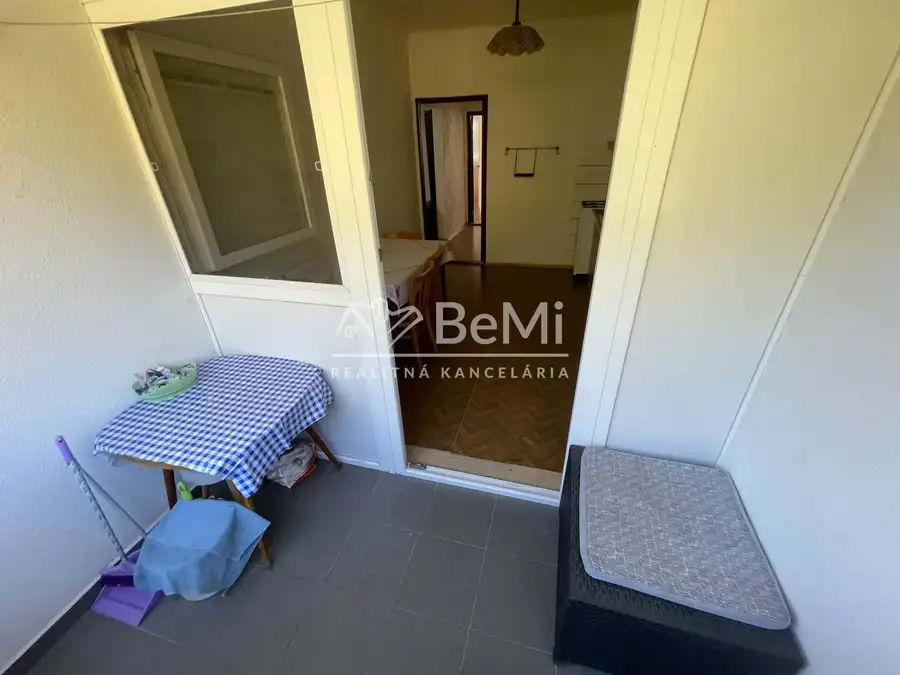
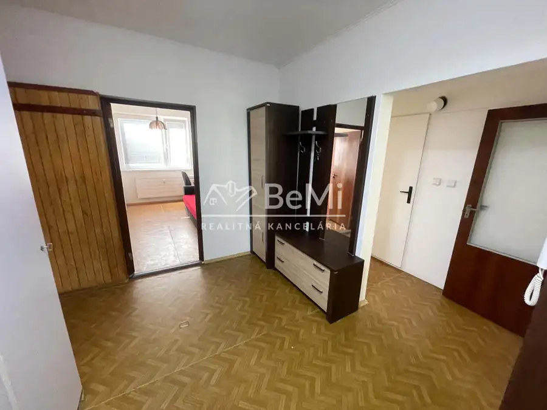
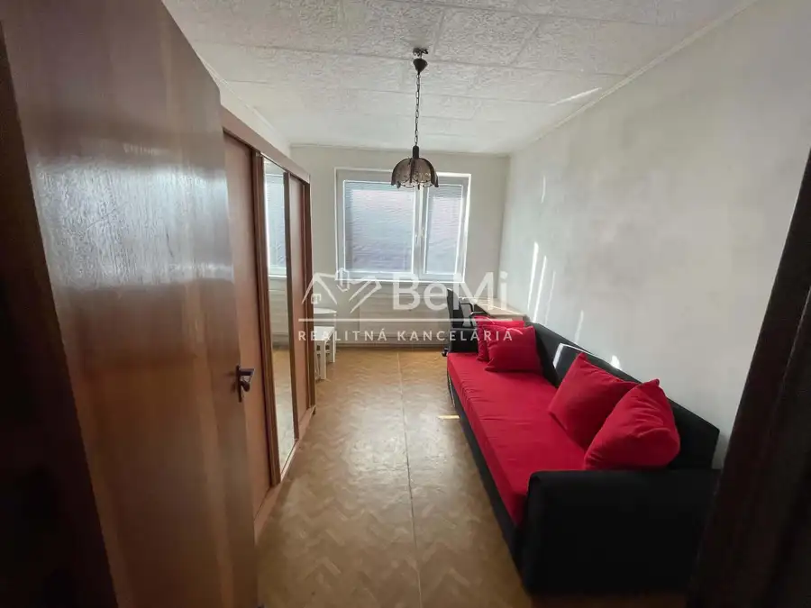
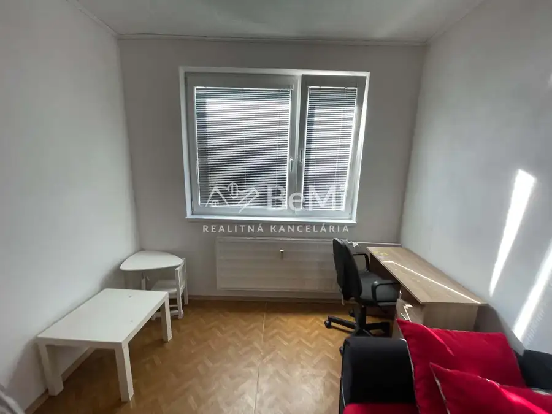

Prenájom 3 - izbového bytu v obci Nová Baňa
Nová Baňa




- Dispozícia3-izbový
- Poschodie7. z 7
- StavPôvodný stav
- VlastníctvoOsobné
O nehnuteľnosti
🏠 V ponuke na prenájom priestranný 3 izbový byt v obci Nová BaňaROZLOHA:• rozloha bytu - 69,8 m²POSCHODIE:• 7. poschodie DISPOZÍCIA:• chodba, kúpeľňa s wc, kuchyňa s obývačkou, 2x izba, loggia✅BYT:• pôvodné bytové jadro✅• pôvodná kúpeľňa aj wc✅• vymenené plastové okná✅• menené rozvody elektriny✅• obyčajné vchodové dvere✅BYTOVÝ DOM:• prešiel rekonštrukciou✅• panelový dom✅• elektrický vrátnik, moderný výťah, pivnica✅LOKALITA:• vynikajúca dostupnosť bežných vecí• kompletná občianska vybavenosť v pešej dostupnosti• obchody, škola, škôlka, detské ihriská, reštaurácia atď.DOSTUPNOSŤ:• k dispozícii ihneď✅CENA:• 550 € aj s energiami 💶KONTAKT:• René Lipčák - realitný maklér• BeMi reality• mobil - 0949097655• mail - lipcak@realitybemi.sk• web - realitybemi.skZavolajte alebo napíšte, a dohodnite si obhliadku.✍️📱
Parametre
- Cena vrátane energií
- Nie
- Druh
- 3 izbový byt
- Dátum zverejnenia
- 17. 09. 2026
- Podlažie
- 7
- Počet izieb / miestností
- 3
- Počet nadzemných podlaží
- 7
- Stav nehnuteľnosti
- Pôvodný stav
- Typ
- Prenájom
- Typ konštrukcie
- Panelová
- Vlastníctvo
- Osobné
- Vybavenie
- Lodžia, Pivnica, Výťah
- Zariadenie
- Čiastočne zariadené
- Úžitková plocha
- 0 m²